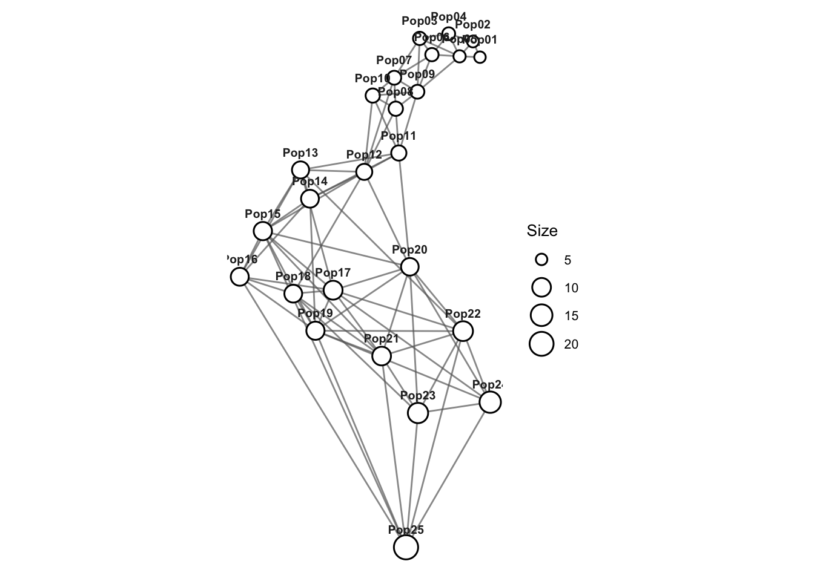
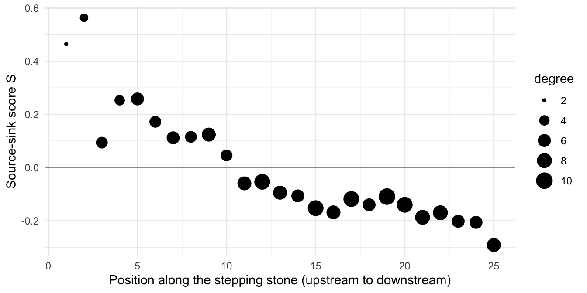
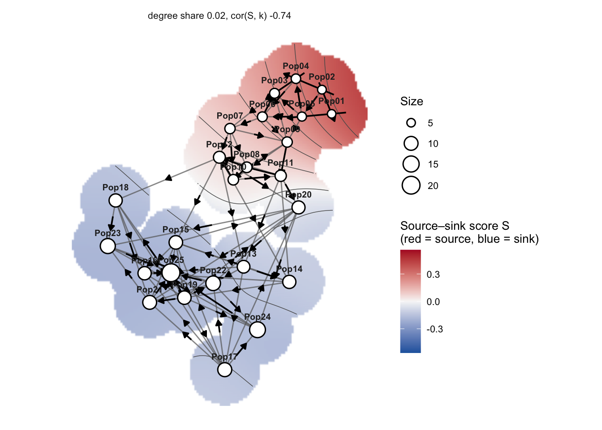
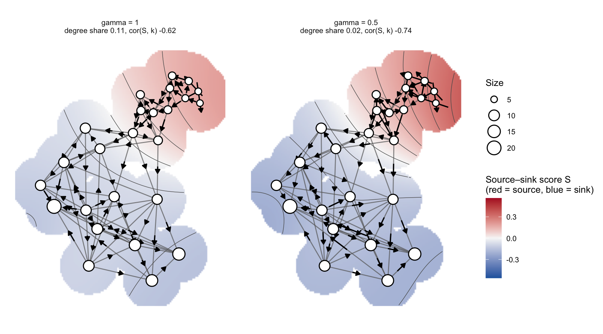
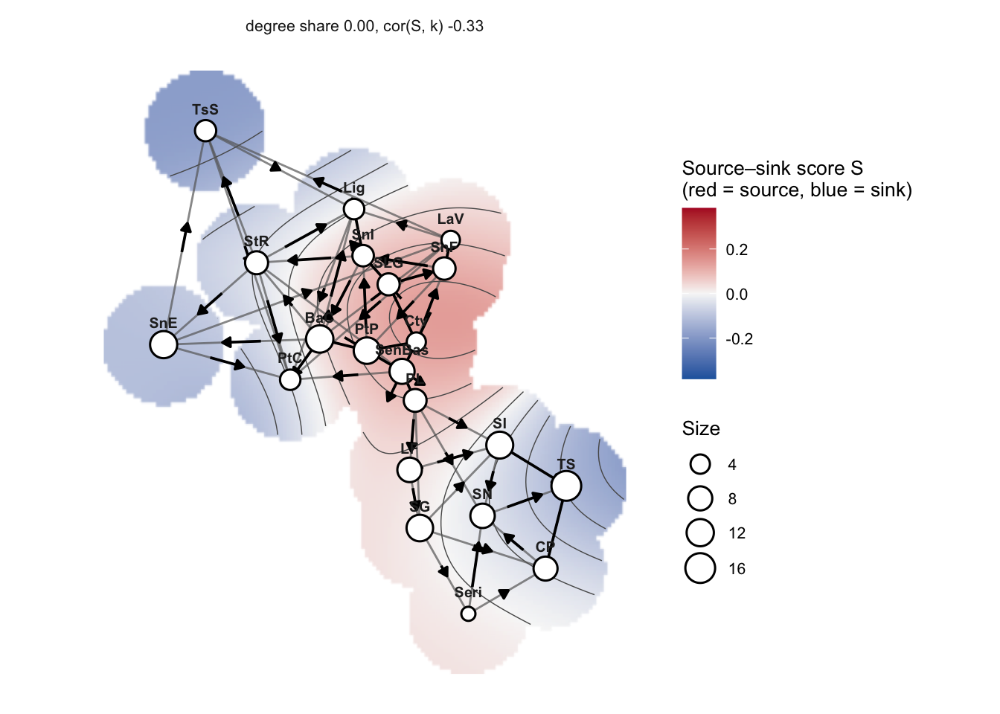
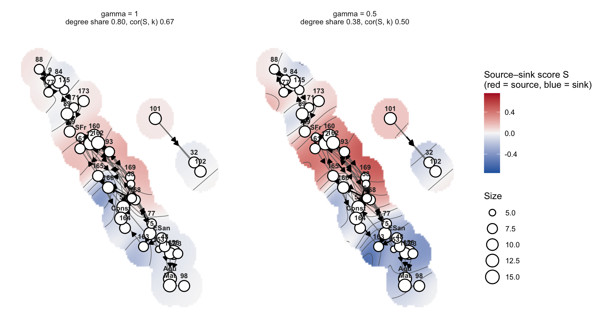

library(gstudio)
library(dplyr)
library(ggplot2)9 Genetic Gravity
A Population Graph is undirected: each edge is a single, symmetric conditional genetic distance between two populations. Genetic gravity reads direction out of that symmetric graph by asking, for every edge, how near it looks from each of its two ends. The few quantities involved are set out first, followed by a complete analysis, from raw genotypes to a Population Graph, source-sink scores, tests for a directional gradient and a map of the gravity field.
The code below is written as pipelines, with each function on its own line. Every gstudio function takes its data as the first argument, so the same calls also work in the older style, with options such as stratum = passed as arguments; those versions are collected at the end, under Without pipes.
9.1 The model in brief
Let \(e_{ij}\) be the weight (conditional genetic distance, cGD) of the edge between populations \(i\) and \(j\), \(N(i)\) the populations connected to \(i\), \(k_i = |N(i)|\) its degree and \(s_i = \sum_{j \in N(i)} e_{ij}\) its strength.
Neighbourhood weights. Population \(j\)’s weight in \(i\)’s neighbourhood is a Gaussian kernel over \(i\)’s retained neighbours only, so by the Markov properties of the graph nothing beyond them contributes:
\[ w_{j\mid i} = \frac{\exp\left(-e_{ij}^2 / 2b_i^2\right)} {\sum_{k \in N(i)} \exp\left(-e_{ik}^2 / 2b_i^2\right)}, \qquad b_i = \gamma \, \frac{s_i}{k_i}. \]
The bandwidth \(b_i\) is a multiple \(\gamma\) of the mean edge weight around \(i\), so rescaling every edge weight leaves everything below unchanged.
Gravity asymmetry. Every edge is read from both ends. The signed difference
\[ \Delta_{i \to j} = w_{i\mid j} - w_{j\mid i} \]
is \(i\)’s pull on \(j\) minus \(j\)’s pull on \(i\). Positive values make \(i\) the genetic source and \(j\) the sink; throughout, higher means more of a source.
Gravity and source-sink scores. The gravity of population \(i\) is the total weight it holds in its neighbours’ neighbourhoods, \(g_i = \sum_{j \in N(i)} w_{i\mid j}\). Because each neighbourhood sums to one, \(\sum_i g_i = K\), so the balance \(g_i - 1\) sums to zero: every source is offset by sinks. The source-sink score \(S\) puts all populations on one scale, as the values whose differences best reproduce the asymmetries on every edge:
\[ \hat{S} = \arg\min_S \sum_{(i,j) \in E} \left[\Delta_{i \to j} - (S_i - S_j)\right]^2, \qquad \textstyle\sum_i S_i = 0 \text{ within each connected component.} \]
Degree and the bandwidth. As the kernel flattens, \(w_{j\mid i} \to 1/k_i\) and the asymmetry falls to a floor set by degree alone, \(\Delta^0_{i \to j} = 1/k_j - 1/k_i\). The share of the variance in \(\Delta\) explained by \(\Delta^0\) (the degree share) reports how much of an analysis is topology rather than genetics. Two bandwidths answer different questions: \(\gamma = 1/2\) (the default) is degree-neutral and is used for inferring direction; \(\gamma = 1\), the local mean, keeps the contribution of degree and describes each population’s overall pull in the network.
Partitioned distance. The same weights split each edge into two directed shares, the partitioned conditional genetic distance (pGD):
\[ p_{ij} = e_{ij} \, \frac{w_{j\mid i}}{w_{j\mid i} + w_{i\mid j}}, \qquad p_{ij} + p_{ji} = e_{ij}. \]
Being a distance, pGD is shorter in the direction of gene flow. It turns the undirected graph into a directed one for downstream analyses such as isolation by graph distance.
9.2 The data
gravity holds genotypes from one census of an individual-based simulation: 25 populations of 100 diploids on a one-dimensional stepping stone, scored at 20 biallelic loci. Gene flow runs four times more strongly toward higher-numbered populations than back (Pop01 is the upstream end), so the answer is known in advance. See ?gravity for how the census was chosen.
data(gravity)
dim(gravity)[1] 2500 22gravity |>
select(Population, L01:L04) |>
head(4) Population L01 L02 L03 L04
1 Pop01 02:02 02:02 02:02 01:01
2 Pop01 02:02 02:02 02:02 01:01
3 Pop01 02:02 02:02 02:02 01:01
4 Pop01 02:02 02:02 02:02 01:019.3 From genotypes to a Population Graph
population_graph() encodes the genotypes and builds the graph among the strata in the Population column (its default stratum).
graph <- gravity |>
population_graph()
graphIGRAPH f9a6152 UNW- 25 81 --
+ attr: name (v/c), size (v/n), weight (e/n)
+ edges from f9a6152 (vertex names):
[1] Pop01--Pop02 Pop01--Pop05 Pop02--Pop04 Pop02--Pop05 Pop03--Pop04
[6] Pop03--Pop05 Pop03--Pop06 Pop03--Pop07 Pop03--Pop09 Pop04--Pop05
[11] Pop04--Pop06 Pop05--Pop06 Pop05--Pop09 Pop06--Pop07 Pop06--Pop09
[16] Pop07--Pop08 Pop07--Pop09 Pop07--Pop10 Pop07--Pop12 Pop08--Pop09
[21] Pop08--Pop10 Pop08--Pop11 Pop08--Pop12 Pop09--Pop10 Pop09--Pop11
[26] Pop10--Pop11 Pop10--Pop12 Pop11--Pop12 Pop11--Pop13 Pop11--Pop14
[31] Pop11--Pop20 Pop12--Pop13 Pop12--Pop14 Pop12--Pop15 Pop12--Pop18
[36] Pop12--Pop20 Pop13--Pop14 Pop13--Pop15 Pop13--Pop16 Pop13--Pop17
+ ... omitted several edgesThe hypothesized axis of flow is position along the stepping stone, which here is the population number:
nodes <- igraph::V(graph)$name
deme <- nodes |>
sub(pattern = "Pop", replacement = "") |>
as.integer() |>
setNames(nodes)plot() draws the graph. Without coordinates it uses a Kamada-Kawai layout. population_graph() stores each population’s within-population genetic variability as the size vertex attribute, and nodes are sized by it.
graph |>
plot()
9.4 Neighbourhood weights and edge asymmetries
neighbourhood_weights() returns \(W_{ij} = w_{j\mid i}\); each row sums to one over that population’s neighbours.
W <- graph |>
neighbourhood_weights()
round(W[1:5, 1:5], 3) Pop01 Pop02 Pop03 Pop04 Pop05
Pop01 NA 0.996 0.000 0.000 0.004
Pop02 0.733 NA 0.000 0.000 0.267
Pop03 0.000 0.000 NA 0.318 0.096
Pop04 0.000 0.342 0.025 NA 0.343
Pop05 0.374 0.377 0.004 0.208 NArowSums(W, na.rm = TRUE)[1:5]Pop01 Pop02 Pop03 Pop04 Pop05
1 1 1 1 1 gravity_edges() gives one row per edge with both weights, \(\Delta\) and the degree-only floor \(\Delta^0\). Supplying the covariate x orients every edge from the lower to the higher value of x, so a positive Delta means the upstream population is the source.
edges <- graph |>
gravity_edges(x = deme)
edges |>
head() from to weight w_from w_to Delta Delta0
1 Pop01 Pop02 0.02099175 0.733094993 9.963076e-01 -0.26321259 -0.16666667
2 Pop01 Pop05 0.11882358 0.374119222 3.692420e-03 0.37042680 -0.33333333
3 Pop02 Pop04 0.33586803 0.342011895 7.814182e-05 0.34193375 -0.08333333
4 Pop02 Pop05 0.11338874 0.376951325 2.668269e-01 0.11012446 -0.16666667
5 Pop03 Pop04 0.56677730 0.024682811 3.180852e-01 -0.29340238 0.05000000
6 Pop03 Pop05 0.89011577 0.003576448 9.573413e-02 -0.09215768 -0.03333333edges |>
summarize(edges = n(),
upstream_source = mean(Delta > 0)) edges upstream_source
1 81 0.85185199.5 Source-sink scores and the bandwidth
source_sink_scores() returns each population’s gravity, balance and \(S\), with the degree diagnostics attached.
scores <- graph |>
source_sink_scores(x = deme)
scores |>
select(Stratum, S, gravity, balance, degree) |>
head() Stratum S gravity balance degree
Pop01 Pop01 0.46451674 1.1072142 0.10721422 2
Pop02 Pop02 0.56364022 1.7152708 0.71527080 3
Pop03 Pop03 0.09368236 0.5494002 -0.45059984 5
Pop04 Pop04 0.25295405 0.9242989 -0.07570106 4
Pop05 Pop05 0.25817905 0.8782849 -0.12171506 6
Pop06 Pop06 0.17201565 1.0194000 0.01939995 5attr(scores, "degree_share")[1] 0.02422223Plotted against position, \(S\) falls steadily downstream: sources upstream, sinks downstream.
scores |>
mutate(deme = deme[Stratum]) |>
ggplot(aes(deme, S)) +
geom_hline(yintercept = 0, colour = "grey60") +
geom_point(aes(size = degree)) +
labs(x = "Position along the stepping stone (upstream to downstream)",
y = "Source-sink score S") +
theme_minimal()
The degree share says how much of \(\Delta\) is set by the number of neighbours. At the degree-neutral bandwidth it is small; at the local mean, degree carries more of the signal. A gravity field computed at both bandwidths reports the diagnostics side by side:
graph |>
gravity_field(gamma = c(0.5, 1)) |>
as.data.frame(what = "diagnostics") |>
select(gamma, degree_share, cor_S_degree, gradient_share) gamma degree_share cor_S_degree gradient_share
1 0.5 0.02422223 -0.7391258 0.6832610
2 1.0 0.11470901 -0.6176602 0.7443709Report the bandwidth and the degree share with any directional result.
9.6 Testing for a directional gradient
Two complementary procedures test for direction. Neither permutes parts of the graph freely: \(\Delta\) and \(S\) inherit smooth, node-level structure from drift on the graph, and nulls that ignore it are anti-conservative.
9.6.1 Source-sink gradient test
The statistic is Spearman’s \(r(S, x)\). The null is Moran spectral randomization of \(S\) on the graph itself, which reproduces the smoothness \(S\) inherits from the topology. A negative \(r\) places the sources at low \(x\).
set.seed(1)
graph |>
source_sink_test(x = deme)
Source-sink gradient test (Spearman r(S, x); Moran spectral
randomization on the graph)
data: graph and deme
r = -0.95538, nodes = 25, nperm = 999, p-value = 0.001
alternative hypothesis: true r is not equal to 0
sample estimates:
degree share
0.02422223
Bandwidth gamma = 0.5. Sources at low values of x.9.6.2 Directional isolation by graph distance
The second procedure asks whether modelling direction improves isolation by graph distance. It regresses all-pairs cGD on spatial separation (\(R^2_{cGD}\)), then regresses all-pairs directed pGD on separation with separate forward and reverse slopes (\(R^2_{pGD}\), adjusted). \(\Delta R^2 = R^2_{pGD} - R^2_{cGD} > 0\) means the directional description fits better; the forward-to-reverse slope ratio gives the direction and strength (below one: genetic distance accumulates more slowly downstream). This is not a nested-model test, and \(\Delta R^2 \le 0\) is an absence of evidence for asymmetry, not evidence of symmetry.
ibgd() does both steps and prints each as a standard test. The default, mode = "cgd", is ordinary isolation by graph distance, with a Mantel permutation test of the correlation between cGD and separation; mode = "pgd" adds the directional model and reports \(\Delta R^2\) with the forward and reverse slopes. It gives no p-value for \(\Delta R^2\), because the two fits are not nested.
graph |>
ibgd(x = deme)
Isolation by graph distance (cGD; Mantel permutation test)
data: graph and deme
r = 0.82018, pairs = 300, nperm = 999, p-value = 0.001
alternative hypothesis: true r is greater than 0
sample estimates:
R2 slope
0.6727021 0.5559210 graph |>
ibgd(x = deme, mode = "pgd")
Directional isolation by graph distance (pGD at gamma = 0.5 vs cGD)
data: graph and deme
delta R2 = 0.15551, pairs = 600
sample estimates:
R2 cGD adj R2 pGD forward slope reverse slope slope ratio
0.672702107 0.828208585 0.008784513 0.508581302 0.017272583
Directional description preferred (delta R2 > 0); slope ratio 0.0173: genetic
distance accumulates more slowly in the forward direction.
No p-value: the fits are not nested (see ?ibgd); corroborate with source_sink_test().Both procedures recover the imposed direction: a strong negative gradient in \(S\) (sources upstream), and a directional isolation model that fits better than the symmetric one with far shallower downstream than upstream isolation.
pGD is available directly for other downstream analyses. From the genotypes, genetic_distance() returns all-pairs directed shortest-path pGD alongside the other distance metrics, where P[i, j] is the distance from \(i\) to \(j\); from an existing graph, pgd() gives the same matrix (output = "matrix") or the directed graph of edge shares (output = "graph").
P <- gravity |>
genetic_distance(mode = "pgd")
round(P[1:4, 1:4], 3) Pop01 Pop02 Pop03 Pop04
Pop01 0.000 0.012 0.033 0.012
Pop02 0.009 0.000 0.041 0.000
Pop03 0.659 0.650 0.000 0.375
Pop04 0.284 0.275 0.041 0.0009.7 Mapping the gravity field
gravity_field() collects every population-level and edge-level quantity; plot() interpolates \(S\) over the node positions (red = source, blue = sink) and draws an arrow on each edge from source to sink, with length proportional to \(|\Delta|\). Node placement is a drawing choice made in plot(); without coordinates, layouts are computed on the directed pGD graph so that gene flow shapes the picture.
field <- graph |>
gravity_field()
fieldGravity field: 25 populations, 81 edges, gamma = 0.5
degree share 0.024, cor(S, degree) -0.739, gradient share 0.683
strongest sources: Pop02 (0.564), Pop01 (0.465), Pop05 (0.258)
strongest sinks: Pop25 (-0.292), Pop24 (-0.206), Pop23 (-0.202)field |>
plot()
Fields with several panels are drawn on common scales. Here the same graph at the local-mean and degree-neutral bandwidths:
graph |>
gravity_field(gamma = c(1, 0.5)) |>
plot(node_labels = "none")
All the quantities behind the map are available as tidy tables for your own figures:
field |>
as.data.frame(what = "edges") |>
arrange(desc(abs(delta))) |>
head() panel from to weight delta source sink
1 Pop01 Pop05 0.11882358 0.3704268 Pop01 Pop05
2 Pop02 Pop04 0.33586803 0.3419338 Pop02 Pop04
3 Pop03 Pop04 0.56677730 -0.2934024 Pop04 Pop03
4 Pop24 Pop25 5.27754332 0.2746088 Pop24 Pop25
5 Pop01 Pop02 0.02099175 -0.2632126 Pop02 Pop01
6 Pop08 Pop11 1.56982291 0.2300892 Pop08 Pop119.8 Default behaviour on a real graph
Nothing above is specific to simulated data. For an existing Population Graph the defaults give a complete picture in one line, here for lopho, the Population Graph of the Sonoran Desert cactus Lophocereus.
data(lopho)
lopho |>
gravity_field() |>
plot()
9.9 Without pipes
The pipelines above are the recommended style. Every call also works with its options passed as arguments, without dplyr; these are the equivalents of the steps above, shown here but not run:
graph <- popgraph(to_mv(gravity), groups = gravity$Population)
deme <- as.integer(sub("Pop", "", igraph::V(graph)$name))
names(deme) <- igraph::V(graph)$name
W <- neighbourhood_weights(graph, gamma = 0.5)
edges <- gravity_edges(graph, gamma = 0.5, x = deme)
scores <- source_sink_scores(graph, gamma = 0.5, x = deme)
source_sink_test(graph, x = deme, gamma = 0.5, nperm = 999)
ibgd(graph, x = deme, mode = "cgd", nperm = 999)
ibgd(graph, x = deme, mode = "pgd", gamma = 0.5)
P <- genetic_distance(gravity, stratum = "Population", mode = "pgd", gamma = 0.5)
field <- gravity_field(graph, gamma = 0.5)
plot(field, layout = "kk", surface = "interpolate")9.10 Empirical data: Araptus attenuatus
The same analysis applies directly to field data. Here the Population Graph is built from the arapat genotypes with population_graph(), and the populations’ geographic centroids give both the map layout and a covariate to test against: latitude along the Baja California peninsula.
data(arapat)
beetles <- arapat |>
population_graph()
coords <- arapat |>
strata_coordinates()
lat <- coords |>
pull(Latitude, name = Stratum)Passing the centroids as layout draws the gravity field on geographic coordinates. Sampling locations are clustered, so the surface is extended with mask_dist (by default it reaches 1.2 times the median nearest-neighbour distance between populations). Comparing the two bandwidths shows how much of the local-mean picture is degree:
both <- beetles |>
gravity_field(gamma = c(1, 0.5))
both |>
as.data.frame(what = "diagnostics") panel gamma degree_share cor_S_degree cor_S_S0 gradient_share
1 gamma = 1 1.0 0.8007861 0.6726810 0.8610787 0.9730979
2 gamma = 0.5 0.5 0.3775389 0.4977765 0.4525419 0.9625214both |>
plot(layout = coords, mask_dist = 0.6)
Both tests take latitude as the hypothesized axis:
set.seed(1)
beetles |>
source_sink_test(x = lat, nperm = 499)
Source-sink gradient test (Spearman r(S, x); Moran spectral
randomization on the graph)
data: beetles and lat
r = 0.34668, nodes = 39, nperm = 499, p-value = 0.356
alternative hypothesis: true r is not equal to 0
sample estimates:
degree share
0.3775389
Bandwidth gamma = 0.5. Sources at high values of x.beetles |>
ibgd(x = lat)
Isolation by graph distance (cGD; Mantel permutation test)
data: beetles and lat
r = 0.51152, pairs = 340, nperm = 999, p-value = 0.001
alternative hypothesis: true r is greater than 0
sample estimates:
R2 slope
0.2616567 5.9675455 beetles |>
ibgd(x = lat, mode = "pgd")
Directional isolation by graph distance (pGD at gamma = 0.5 vs cGD)
data: beetles and lat
delta R2 = -0.0024306, pairs = 680
sample estimates:
R2 cGD adj R2 pGD forward slope reverse slope slope ratio
0.2616567 0.2592261 3.4625088 2.4044852 1.4400208
Symmetric description sufficient (delta R2 <= 0): no evidence for asymmetry.
No p-value: the fits are not nested (see ?ibgd); corroborate with source_sink_test().Without pipes, the same steps are:
beetles <- population_graph(arapat, stratum = "Population")
coords <- strata_coordinates(arapat, stratum = "Population")
lat <- setNames(coords$Latitude, coords$Stratum)
plot(gravity_field(beetles, gamma = c(1, 0.5)), layout = coords, mask_dist = 0.6)
source_sink_test(beetles, x = lat, nperm = 499)
ibgd(beetles, x = lat, mode = "cgd")
ibgd(beetles, x = lat, mode = "pgd")The two tests answer different questions. Under strong drift the model comparison can prefer a directional fit by chance, so read it alongside the source-sink test. Edge-level permutation tests of \(\Delta\) (asymmetry_significance() and its modes) are not recommended as tests of direction: under symmetric migration they are anti-conservative, or never reject.
9.11 Data quality: information loss
As loci fix, graphs are estimated from fewer informative loci, which inflates \(|\Delta|\) whatever the direction of gene flow. locus_subsample_null() rebuilds the graph from random subsets of polymorphic loci, to show how much \(|\Delta|\) information loss alone can produce at a given level of polymorphism:
arapat |>
locus_subsample_null(k = c(2, 3, 4, 6), nsub = 3)9.12 Simulating directional gene flow
A directional stepping stone, with rates to the next population downstream (m_fwd) and upstream (m_rev), plugs into simulate_pop(); this is how the gravity data were generated (at a much larger scale):
demes <- sprintf("Pop%02d", 1:10)
mm <- demes |>
migration_matrix(model = "stepping_stone_1d_asym", m_fwd = 0.04, m_rev = 0.01)
out <- data.frame(Population = rep(demes, each = 2),
Locus = "L1",
Allele = rep(c("01", "02"), 10),
Frequency = 0.5) |>
make_populations(N = 50) |>
simulate_pop(ngen = 200, migration = migration_event(mm), verbose = FALSE)9.13 Summary
| Step | Function |
|---|---|
| Population Graph from genotypes | population_graph() |
| Neighbourhood weights \(w_{j\mid i}\) | neighbourhood_weights() |
| Edge asymmetry \(\Delta\) and degree floor \(\Delta^0\) | gravity_edges() |
| Gravity, balance and source-sink score \(S\); degree diagnostics | source_sink_scores() |
| Partitioned distance pGD | genetic_distance(mode = "pgd"), pgd() |
| Gradient test, \(r(S, x)\) | source_sink_test() |
| Isolation by graph distance (Mantel); directional isolation, \(\Delta R^2\) | ibgd(mode = "cgd"), ibgd(mode = "pgd") |
| Everything for mapping; the map | gravity_field(), plot() |
Use \(\gamma = 1/2\) for inferring direction and \(\gamma = 1\) for describing connectivity, and report the degree share with every directional analysis.
9.14 References
Dyer RJ, Nason JD (2004) Population Graphs: the graph theoretic shape of genetic structure. Molecular Ecology 13: 1713–1727.
Dyer RJ (in prep.) Genetic Gravity I: Extracting directional gene flow from Population Graphs.
Hinton GE, Roweis ST (2003) Stochastic neighbor embedding. Advances in Neural Information Processing Systems 15: 857–864.
Wagner HH, Dray S (2015) Generating spatially constrained null models for irregularly spaced data using Moran spectral randomization methods. Methods in Ecology and Evolution 6: 1169–1178.